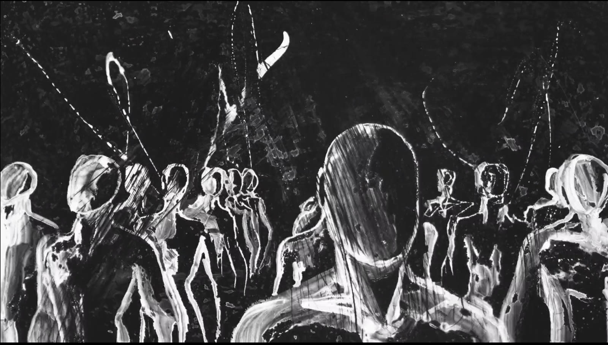
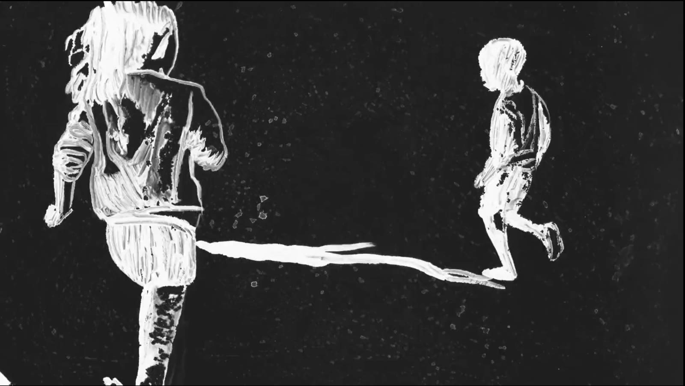
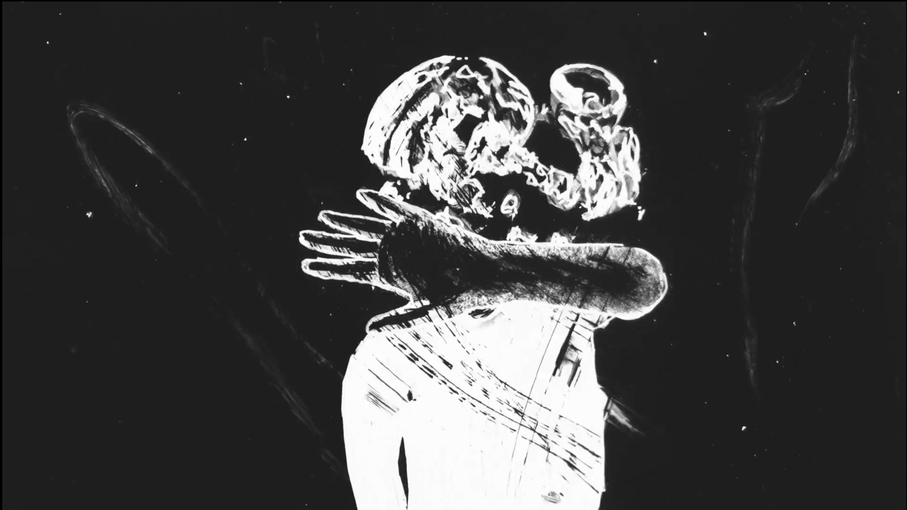

Apnea
Bakari è nato schiavo in Gambia. È uscito dal suo paese per raggiungere suo padre che stava lavorando in Libia, per poi ritrovarsi a 18 anni su una barca in mezzo al Mediterraneo, solo e senza più forze. Joy una mattina è uscita di casa per fare jogging e non ha mai più rivisto la sua famiglia. Moustapha è dovuto scappare, Danielle è andata a «cercare la vita» per lei e per suo figlio.
Quattordici voci che raccontano quattordici storie, ma che al tempo stesso ne raccontano una soltanto: quella di tanti altri che come loro hanno dovuto affrontare il viaggio che li ha portati fin qui, passando attraverso il deserto, la Libia, il mare, sopportando pestaggi, torture, prigioni, stupri, rapimenti. Un racconto sommerso che ci mette di fronte a un tema discusso e controverso partendo dal cuore della questione: le persone e la mole di vita e ricordi che si portano dentro.


